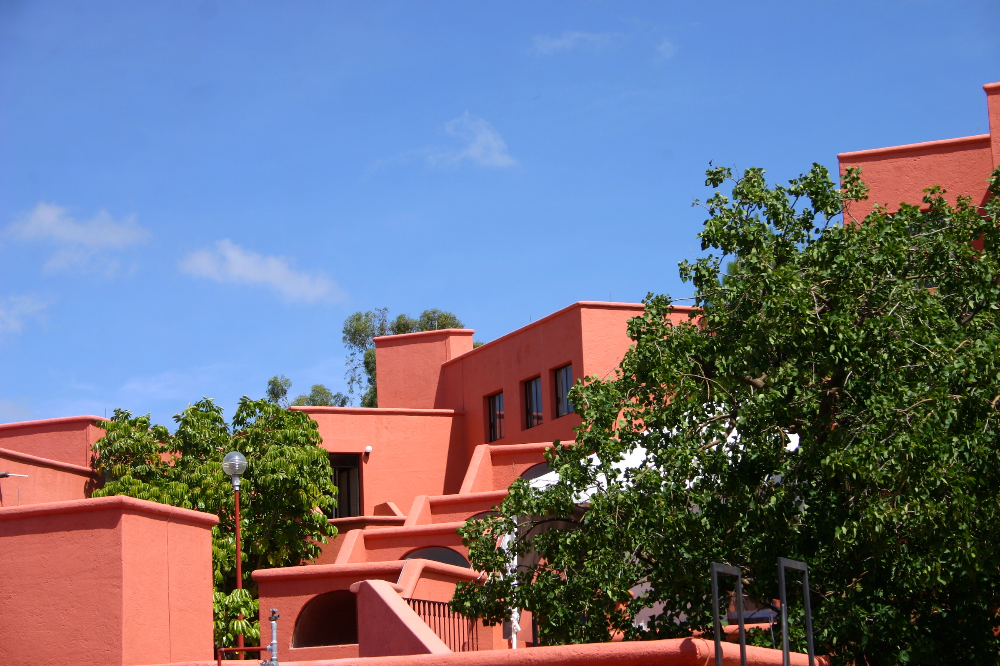
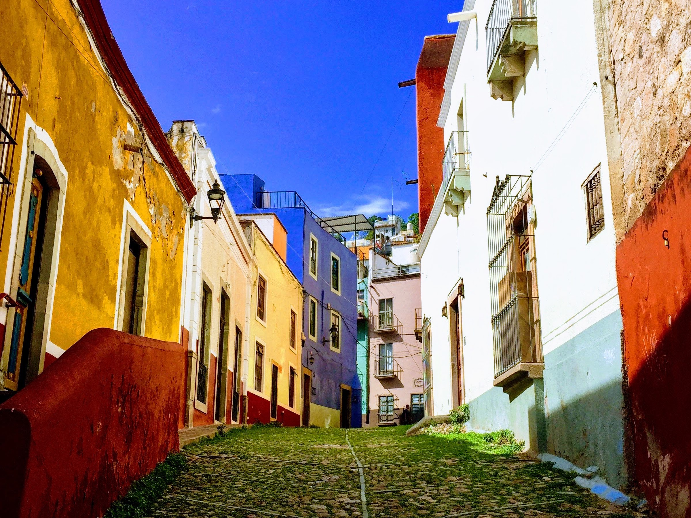
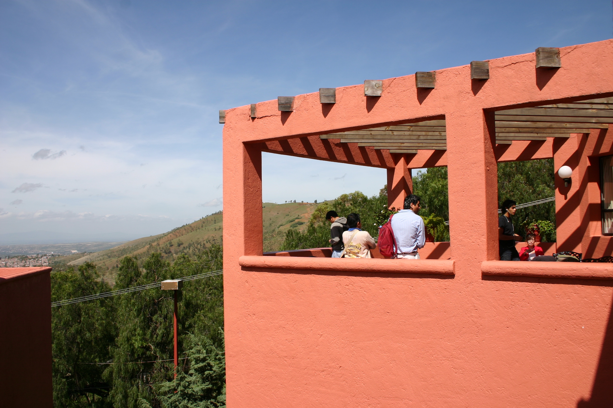
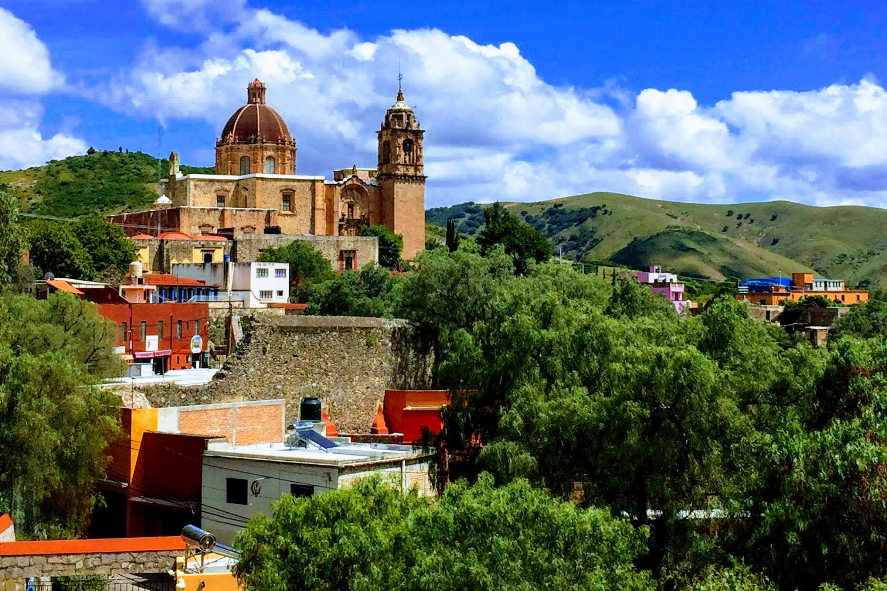

Location & dates
Basic information
Apply
Local information
Organizers
Sponsors
International REU in Commutative Algebra
A Research Experience for Undergraduates in Guanajuato, Mexico
supported by Conahcyt and by the NSF RTG Commutative Algebra at Nebraska

Participants and mentors in the 2025 International REU in Commutative Algebra




photo credits: Manuel González Villa and CIMAT
Location & dates
Location: Centro de Investigación en Matemáticas, Guanajuato, Gto., Mexico
Dates: June 23–August 1, 2025
Dates: June 23–August 1, 2025
Information
American citizens and permanent US residents will be supported with funds from the National Science Foundation (NSF), while Mexican citizens or residents in Mexico will be supported with funds from the Consejo Nacional de Humanidades, Ciencias, y Tecnologías (CONAHCYT). Participants will receive a stipend for the duration of the program and assistance with housing and travel.